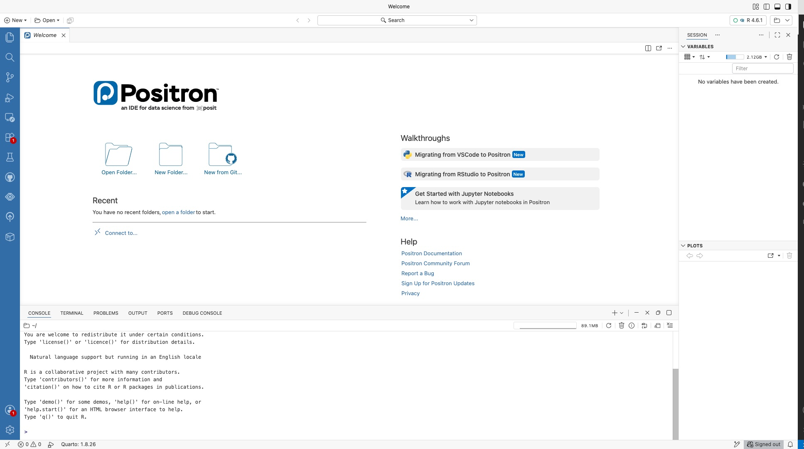

2 Introduction to R and Positron
Learning Objectives
By the end of this module you should be able to:
- Explain what R is and why we are using it in addition to Excel.
- Install R and Positron, and run a simple R script.
- Read a CSV file into R as a data frame.
- Compute basic summary statistics (mean, median, sd, quartiles) in R.
- Save a script that someone else can run from scratch and get the same results.
- Use AI tools (GitHub Copilot, Claude, ChatGPT) productively to help write R code, while maintaining ownership of what the code does.
2.1 Why R? (And Why Also Excel?)
You just spent a module getting comfortable with Excel. Now I am going to tell you to put it down and learn a new tool. Let me explain why.
Excel is an excellent tool for what it was designed to do: small-to-medium calculations where you can see every number on the screen, exploratory work, and handoffs to non-technical colleagues. But it has serious limitations:
- Reproducibility. An Excel workbook is a tangle of cells; there is no canonical record of what order things were done in. If you want to re-run an analysis on new data, you have to click through the whole thing again.
- Scale. Excel caps out at a bit over a million rows per sheet and slows to a crawl well before that. Real datasets are often larger.
- Version control. Excel files are binary blobs. You cannot see meaningful “diffs” between two versions.
- Composability. Doing the same operation (e.g., compute summary statistics) on fifteen different files in Excel means clicking through the same steps fifteen times.
- Advanced statistics. Excel can do \(t\)-tests and linear regression, but the further you move from basic statistics, the worse a choice it is.
R is a programming language designed for statistical computing. It was created in the 1990s as a free, open-source successor to the commercial language S. It is now the dominant language for academic statistics and one of the two main languages (along with Python) for data science in industry.
R fixes every one of the limitations above. Your analysis is a script — a plain-text file that can be re-run, shared, version-controlled, and composed with other scripts. You can handle datasets of tens of millions of rows without trouble. You get access to thousands of packages written by statisticians around the world.
But here is the biggest reason of all, and it goes far beyond this course: learning R means learning to program. Once you can write code — tell a computer exactly what to do, step by step — you are no longer limited to the buttons someone else put in a menu. You can automate anything repetitive, wrangle data no spreadsheet could handle, and build tools that do exactly what you need.
And this skill is about to become enormously more powerful, not less, because of AI. It is tempting to think “why learn to code when AI can write the code for me?” — but that has it backwards. AI is a spectacular amplifier for people who understand programming, and close to useless for those who don’t. The person who can read the code an AI produces, spot the subtle bug, tell when it has answered the wrong question, and describe precisely what they want — that person will get ten times the value out of these tools as someone who can only copy, paste, and hope. Learning to program is what turns AI from a black box you have to trust blindly into a power tool you can actually aim. That is one of the most valuable things you will take out of this course, and R is where it starts.
But — and this is important — R is not a replacement for Excel. They are different tools for different phases of work. I will tell you when I find myself using each in practice:
- Excel: quick ad-hoc calculations, sharing results with non-technical colleagues, building interactive workbooks for people who need to poke at numbers, presenting formatted tables.
- R: any analysis I want to re-run later, any dataset over a few thousand rows, anything involving statistical modeling, anything I need to reproduce exactly for a paper or a report.
Most professional analysts use both. That is what we will do too.
Why Not Python?
If you have heard of Python as “the other big data science language,” you may be wondering why we are starting with R. Honest answer: both are great; either would work for this course. R has a slight edge for the specific kind of statistical work we will do — better built-in stats functions, better visualization via ggplot2, stronger traditions around reproducible research — and it is what I know best. If you learn R well, Python will be easy to pick up later. Everything transfers.
- R for Data Science (2nd ed.) — the free, standard R textbook by Hadley Wickham and colleagues. The Introduction lays out what data science is and the workflow (import → tidy → transform → visualize → model → communicate) we will follow.
- Video — R Programming 101, Why you should use R — a short, beginner-friendly pitch for learning R; a good first-day hook.
2.2 Installing R and Positron
You need two pieces of software to work with R:
- R itself — the language and the program that runs your code. Download it from CRAN (the Comprehensive R Archive Network), https://cran.r-project.org/. The CRAN page is plain and a little confusing, so here is exactly where to click:
- Windows: click Download R for Windows → base → Download R for Windows, then run the installer with all the default options.
- Mac: click Download R for macOS, then pick the installer that matches your chip — the Apple silicon (arm64) one for M1/M2/M3-and-newer Macs, or the Intel one for older Macs. (If you are not sure, click the Apple menu → About This Mac and look at the “Chip” or “Processor” line.) Then run the installer with the defaults.
- Positron — the editor we will use to write R code. Download from https://positron.posit.co/ and install it. Install R first, then Positron, so Positron can find your R.
Positron is a new data science IDE from Posit (the same company that makes RStudio). Think of it as the spiritual successor to RStudio, rebuilt on the same foundation as VS Code but purpose-built for data science work. It has the same kind of integrated layout you may have seen in RStudio — editor, console, plot window, variables pane, file browser — but with a few important advantages:
- Language agnostic. Positron is built to handle both R and Python (and more languages over time), so the same editor will serve you for anything you pick up later. Unlike RStudio, you do not have to switch tools when you switch languages.
- Modern and extensible. Because it is built on the VS Code foundation, it inherits a huge ecosystem of extensions, including GitHub Copilot and other AI coding assistants.
- Data-aware. It has built-in data explorers, variable inspectors, and a plot history tailored to the way data scientists actually work.
If you have used RStudio before, Positron will feel very familiar. If you have used VS Code, the keybindings and command palette will feel familiar. If you have used neither, you are starting from the best possible place.
Setting Up Positron
- Install R (above).
- Download and install Positron from https://positron.posit.co/.
- Open Positron. It needs to know which language “engine” to run your code with — this is called the interpreter. Positron should auto-detect the R you just installed and select it; if it asks, choose your R version. (You can always see or change it from the interpreter picker in the top-right of the window.)
- Open a new R file (File → New File → R File) and try typing
mean(1:10). This asks R for the average of the numbers 1 through 10 (the shorthand1:10means “the whole sequence 1, 2, 3, …, 10”). Run it with Cmd+Enter (Mac) or Ctrl+Enter (Windows/Linux); the answer,5.5, appears in the console. - Optionally: install GitHub Copilot (the AI assistant) via the Extensions panel. This requires a free student account.
When Positron first opens you will see its Welcome screen, which looks something like this:

Positron is under active development and new features are landing constantly. If something in the screenshots or menus in this book doesn’t match what you see, the documentation at https://positron.posit.co/ is the authoritative source.
Why Not RStudio or VS Code?
Honest answer: both would work. RStudio has been the standard R editor for over a decade and is rock solid. VS Code with the R extension is flexible and well-suited to polyglot workflows. We are using Positron because it is the future of both — the best features of RStudio (data-focused layout, built-in console, one-click run) combined with the best features of VS Code (modern architecture, extensibility, Copilot integration). It is the tool I expect to be using in five years, and there is no reason to teach you an older tool first.
If you have RStudio already installed from a previous course and want to keep using it, you are welcome to — everything in this book works there too, you will just occasionally need to adapt a menu name or keyboard shortcut.
- Positron documentation — the Download page has installers for Windows, Mac, and Linux, plus the step for setting up R. The docs home has guides and tutorials for first-time users.
- Video — Posit, Getting Started with Positron: A Quick Tour — a short guided tour of the Positron interface.
2.3 The Console
The fastest way to meet R is the console — the pane where you type a line of code, press Enter, and R immediately does the work and shows you the answer. Think of it as a conversation: you say something, R says something back. Let’s have that conversation.
R as a calculator
Click into the console (the pane usually at the bottom of the Positron window) and type an arithmetic expression, then press Enter:
4 + 5R replies with the answer. Try a few more:
4 * 5
4 + 5 * 2
(4 + 5) * 2Notice that R follows the usual order of operations: 4 + 5 * 2 is 14 (multiplication first), while (4 + 5) * 2 is 18 (the brackets go first) — exactly like the Excel formulas from Module 1. Here is what that looks like in the console:

One thing you will see in the output: each answer is printed with a [1] in front, like [1] 9. That [1] is just R noting that the value shown starts at position 1 of the result — it matters only when a result is a long list of numbers printed across several lines. For a single value you can ignore it.
Saving answers as objects
A calculator forgets each answer as soon as it shows it. R does better: you can save a value under a name and reuse it later. This is the single most important idea in R, so let’s meet it now, in the console.
You save a value with the assignment operator, <- (a less-than sign and a dash, meant to look like a left-pointing arrow). The thing you save is called an object:
a <- 4 # save the value 4 under the name 'a'Read this as “let a be 4.” Notice R did not print anything this time — assignment quietly stores the value rather than showing it. To see what a holds, just type its name:
a # R prints: [1] 4Now that a exists, you can use it in other calculations, and you can save those results too:
a + 5 # uses the stored value: prints [1] 9
b <- a * 2 # save a new object, computed from a
b # prints [1] 8As you create objects, they appear in Positron’s Variables pane on the right (the panel that lists everything you have created). Here a and b show up with their values as soon as they are assigned:

<-. Each object (a, b) appears in the Variables pane on the right as soon as it is created.
An object can hold more than a single number. A vector holds several values (you build one with c(), which combines values), and later you will store whole tables of data. But the pattern is always the same: give something a name with <-, then use that name.
yields <- c(42, 45, 48, 43) # a vector of four yields
mean(yields) # run the 'mean' function on it: prints [1] 44.5That last line shows the other half of R: you run functions on your objects. A function — like mean() — takes an object, does something with it, and hands back a result. So the whole rhythm of R is just this: create objects with <-, and run functions on them (saving the results as new objects when you want to keep them).
Why not just work in the console?
The console is great for quick, throwaway calculations. But it has a serious drawback: it is disposable. Everything you typed is gone when you close Positron, and there is no tidy record of what you did, in what order. For any real analysis — anything you want to re-run, check, share, or hand in — you need your code written down in a file you can save. That file is called a script, and it is the subject of the next section.
- Hands-On Programming with R — a free, gentle beginner’s book. Chapter 2, “The Very Basics,” opens exactly where we did: using R as a calculator, then objects and the
<-assignment operator. - Video — Sani, The R Console: Your First Steps in R — running commands and doing calculations directly in the console.
- Video — MarinStatsLectures, Basic Arithmetic and Coding in R — using R as a calculator (a classic beginner series).
2.4 R Scripts
A script is a plain text file (ending in .R) where you write and save your code. If the console is a throwaway conversation, the script is the permanent recipe for your analysis: you edit it, save it, and can re-run the whole thing later or share it with someone else. This is where your real work lives.
A helpful way to hold the two in your head:
The console is what R says back. The script is what you write and keep.
The golden rule from day one: write your code in the script, not the console. If a calculation is worth doing, it is worth saving.
Creating and running a script
Open Positron and create a new file with File → New File, then choose R File from the menu that appears:

Save it as hello.R, then type (or paste) the following:
# My first R script
# Author: your name
# Date: 2026-09-15
print("Hello, world!")
2 + 2
x <- c(1, 2, 3, 4, 5)
mean(x)Here is the crucial thing that trips up beginners: writing code in the script does not run it. Typing these lines just puts text in a file. Look at the script below — the code is written, but the console is still empty and no objects exist yet in the Variables pane:

To actually run it, click the Run button in the top right to run the whole file, or run just the current line (or selected lines) with Cmd+Enter (Mac) / Ctrl+Enter (Windows). Now things happen: the results appear in the console, and any objects you created show up in the Variables pane:

You should see output like this in the console:
[1] "Hello, world!"
[1] 4
[1] 3Congratulations — you have run your first R script.
Let’s break down what just happened:
- Comments start with
#and are ignored by R. Use them liberally to explain your code. print("Hello, world!")prints text to the console.2 + 2evaluates an expression, just like in the console. R prints the result automatically.x <- c(1, 2, 3, 4, 5)is the “save an object” step you met in the console: it creates a vector of the numbers 1 through 5 and stores it under the namex. (You can write=instead of<-, but<-is traditional in R and I recommend it.)mean(x)is the “run a function on an object” step: it calls themeanfunction onxand hands back the result.
Because it is saved in a file, you can run this script again tomorrow, e-mail it to a classmate, or fix one line and re-run the whole thing — none of which the console lets you do. That is the whole point of working in scripts.
The key idea is that R is a language: you write instructions, R executes them, and the script is a permanent record of what you did. Compare this with an Excel workbook where the “record” is the final state of the cells — there is no trace of the order or logic of the work.
- Video — University of Surrey Library, Writing and running code: script vs console — the difference between typing in the console and saving/running code in a script.
- Video — Sam Burer, The Basics of Scripts in R — a short intro to what an R script is and how to run it.
2.5 R Basics: Vectors, Data Frames, Functions
Vectors
A vector is R’s basic data structure. It is a sequence of values of the same type (all numbers, or all strings, etc.). You create one with c():
yields <- c(48, 52, 47, 55, 50)
varieties <- c("InVigor", "DK", "Clearfield", "InVigor", "DK")
is_irrigated <- c(TRUE, FALSE, FALSE, TRUE, FALSE)Vectors support element-wise arithmetic. If you add two vectors of the same length, R adds them element by element:
a <- c(1, 2, 3)
b <- c(10, 20, 30)
a + b
# [1] 11 22 33This is one of R’s most important features. Most operations automatically “vectorize” — they work on entire vectors at once without requiring a loop. This makes R code concise and fast.
Functions
You call a function by writing its name followed by parentheses with arguments:
mean(yields) # 50.4
sd(yields) # about 3.21
median(yields) # 50
quantile(yields, 0.25) # first quartile
length(yields) # 5To get help on a function, type ?function_name:
?meanR will show you the documentation — what the function does, what its arguments mean, what it returns. Read it. R’s documentation is sometimes terse but always authoritative.
Data Frames
A data frame is R’s word for a table: rows are observations, columns are variables. This is the main thing you will work with.
You can create one by hand:
fields <- data.frame(
field_id = c("F01", "F02", "F03", "F04", "F05"),
region = c("South", "South", "Central", "North", "North"),
yield = c(48, 52, 47, 55, 50)
)But you will almost always read a data frame from a CSV file. More on that in a moment.
You can access columns with the $ operator:
fields$yield # the yield column as a vector
mean(fields$yield) # mean yieldOr with square brackets:
fields[1, ] # first row
fields[, "yield"] # yield column
fields[1, "yield"] # value at first row, yield column- Hands-On Programming with R — Chapter 2, “The Very Basics” (objects, vectors, and writing/using functions) and the “R Objects” chapter (vectors, matrices, and data frames in depth).
- Video — R Programming 101, Using functions and objects in R — applying functions to objects, beginner-friendly.
- Video — Simon Sez IT, Introduction to vectors in R — creating vectors and doing calculations with them.
2.6 Reading Data from CSV
In practice, you almost always have data in a CSV file that you want to read into R. The modern way to do this uses the tidyverse, a collection of add-on packages for data manipulation that has become the standard for working with tabular data in R.
Packages: install once, load every time
A package is a bundle of extra functions someone has written that do not come with R itself. Using one is a two-step process, and beginners constantly trip on the difference:
Install it — once per computer. This downloads the package from the internet and saves it on your machine. You only ever do this once (per computer):
install.packages("tidyverse")This prints a lot of text — progress bars and messages, sometimes in red. That red text is normal; it is not an error. Just wait for it to finish (it can take a few minutes the first time).
Load it — once per script. Installing puts the package on your computer, but it is not switched on until you load it. Put this at the top of every script that uses the tidyverse:
library(tidyverse)
If you skip the library() step and try to use a tidyverse function, R will stop with an error like:
Error in read_csv(...) : could not find function "read_csv"That “could not find function” message almost always means you forgot to load the package (or you have not installed it yet). The fix is to run library(tidyverse) first. Note the quirk: you put quotes around the name when you install (install.packages("tidyverse")) but not when you load (library(tidyverse)).
Reading the file, and the working directory
Once the tidyverse is loaded, you can read a CSV:
yields <- read_csv("canola_yields_2025.csv")read_csv (from the tidyverse) reads the file into a data frame and saves it in the object yields. It also prints a short note about what column types it guessed — check them, because R guesses well but not perfectly.
But here is the thing that stops almost every beginner the first time. When you write just "canola_yields_2025.csv" — a filename with no folder path — R looks for that file in one specific place called the working directory: the folder R currently considers “here.” If the file is not in that folder, you get:
Error: 'canola_yields_2025.csv' does not exist in current working directory (...)To fix this, you need the file and R to agree on where “here” is. Three ways, easiest first:
- Check where R is looking by running
getwd()(“get working directory”). It prints the folder R is currently using. - Point R at the right folder with
setwd("/full/path/to/your/folder")(“set working directory”), or in Positron use Session → Set Working Directory → Choose Directory… and pick the folder that contains your CSV. - Best habit: keep each analysis in its own folder, put the script and its data in that folder, and open that folder in Positron (File → Open Folder…). Then the working directory is already that folder and plain filenames just work.
A couple more notes:
- Alternatively you can give the full path to the file, e.g.
read_csv("C:/Users/you/Documents/data/canola_yields_2025.csv"). Use forward slashes/even on Windows. - If your file uses semicolons or tabs instead of commas, use
read_csv2orread_tsv.
Once you have the data in, you can explore it:
yields # prints the data frame (first 10 rows)
head(yields) # first 6 rows
tail(yields) # last 6 rows
nrow(yields) # number of rows
ncol(yields) # number of columns
names(yields) # column names
summary(yields) # quick summary of every columnsummary() is especially useful as a first look at a new dataset. For every numeric column it reports the min, max, mean, median, and quartiles; for text columns it simply notes how many values there are (and if a column is stored as a factor — a special categorical type — it counts each category). Always run it when you open a new dataset.
- R for Data Science (2nd ed.) — Chapter 7, “Data import”: reading files with
read_csv(), column types, and common import problems. - readr documentation — the tidyverse readr reference for
read_csv()and its relatives. - Working directory & path errors — this chapter from Mastering R Through Errors and Warnings explains
getwd()/setwd()and the “file does not exist” error beginners hit constantly. - Video — Science Grad School Coach, Read and load CSV files into R — loading a CSV step by step.
2.7 Summary Statistics in R
All the summary statistics you learned in Module 1 exist in R too:
mean(yields$yield)
median(yields$yield)
sd(yields$yield)
var(yields$yield)
min(yields$yield)
max(yields$yield)
range(yields$yield) # returns c(min, max)
quantile(yields$yield, 0.25)
quantile(yields$yield, c(0.25, 0.5, 0.75)) # multiple at once
IQR(yields$yield)One thing to watch for: if your data has missing values (coded as NA in R), these functions will return NA by default. To compute the statistic ignoring the missing values, pass na.rm = TRUE:
mean(yields$yield, na.rm = TRUE)This is a common source of confusion. If mean() returns NA unexpectedly, the first thing to check is whether your data has missing values.
- Video — Rob Spencer, Descriptive statistics using the
summaryfunction — a short walkthrough ofsummary(). - Video — Dr E Research Videos, Basic summary statistics in R — mean, median, standard deviation, and the number summary.
2.8 The dplyr Verbs: A First Look
The tidyverse provides a set of verbs for manipulating data frames. You will meet them properly in Module 3, but I want to give you a taste now.
filter()— keep rows matching a condition.select()— keep certain columns.mutate()— add new columns computed from existing ones.summarise()(orsummarize()) — collapse many rows into a single summary row.group_by()— group rows by a variable, so that subsequent operations happen per group.arrange()— sort rows.
And one more piece of machinery: the pipe operator |> (or %>% in older code), which takes the thing on its left and passes it as the first argument to the thing on its right. This lets you chain operations into a readable sequence.
Example: “What is the mean yield of canola for each region, for fields larger than 100 acres?”
yields |>
filter(acres > 100) |>
group_by(region) |>
summarise(mean_yield = mean(yield, na.rm = TRUE),
n = n()) |>
arrange(desc(mean_yield))Read it left to right, top to bottom: “Take the yields data, keep only fields over 100 acres, group by region, compute the mean yield and count in each group, and sort in descending order of mean yield.”
This is a declarative style: you say what you want, not step by step how to get it. Compare it to the Excel equivalent (sort, filter, insert PivotTable, drag fields, adjust aggregation, sort). The R version is more concise, and — crucially — it is a script you can re-run on updated data without clicking anything.
We will spend all of Module 3 on these verbs. For now, just recognize that this is where we are heading.
- R for Data Science (2nd ed.) — Chapter 3, “Data transformation”:
filter,select,mutate,summarize,group_by,arrange, and the pipe. (This is the core of Module 3.) - dplyr documentation — the tidyverse dplyr reference, which lists all the main verbs.
- Video — Dataslice, Dplyr essentials: select, mutate, filter, group_by, summarise & more — one clear intro covering all the core verbs.
2.9 Writing Output to a File
To save a data frame back to a CSV, pass the object you want to save and the filename to write it to. For example, if you have built a summary table and stored it in an object called region_summary:
write_csv(region_summary, "region_summary_2026-09-15.csv")To save a plot (after making one with ggplot2, which comes in Module 4):
ggsave("yield_histogram.png", width = 6, height = 4)And to save the R environment (all the objects in memory) so you can pick up where you left off:
save.image("session_2026-09-15.RData")(Honestly, I rarely do that last one. If your script is reproducible, you should be able to re-run it from scratch to get back to where you were.)
2.10 Writing Good R Scripts
A few habits that will serve you well. I want you to internalize these early because they compound over time:
- Start every script with a header. Your name, the date, what the script does, what input it expects, what output it produces.
- Load libraries at the top. Not scattered throughout the file.
- Use comments to explain why, not what. Anyone can read the code and see what it does. The comment should tell them why you did it that way.
- Use descriptive variable names.
yield_by_region, notx1.mean_yield, notm. - Break long operations into named steps. Instead of one giant pipe, assign intermediate results to variables with meaningful names.
- Make your script re-runnable from scratch. If you have to click buttons or run commands in a specific order outside the script, something is wrong.
- Test on a subset first. For large datasets, develop your analysis on the first 1000 rows until it works, then run on the full data.
A template:
# ---
# Title: Canola yield summary by region
# Author: Your Name
# Date: 2026-09-15
# Input: canola_yields_2025.csv
# Output: region_summary_2026-09-15.csv
# Description:
# Reads the 2025 canola yield data, filters to fields over
# 100 acres, and computes mean yield per region.
# ---
library(tidyverse)
# 1. Load data
yields <- read_csv("canola_yields_2025.csv")
# 2. Explore
summary(yields)
# 3. Summarise by region (only fields > 100 acres)
region_summary <- yields |>
filter(acres > 100) |>
group_by(region) |>
summarise(mean_yield = mean(yield, na.rm = TRUE),
n = n()) |>
arrange(desc(mean_yield))
# 4. Save output
write_csv(region_summary, "region_summary_2026-09-15.csv")Notice: this script is self-documenting. Six months from now, I can read it and understand exactly what it does. That is the goal.
- The tidyverse style guide — style.tidyverse.org is the standard reference for naming, spacing, pipes, and generally readable R code.
- Video — Riffomonas Project (Pat Schloss), Keeping R code DRY with functions — a good-habits video on not repeating yourself, from a reproducible-research series.
2.11 A Word on AI Coding Assistants
I mentioned AI in the Introduction. Let me be more specific now that we are actually writing code.
What AI is good at:
- Scaffolding a script from a description (“read this CSV, compute summary statistics by region, make a bar chart”).
- Explaining error messages. Paste the error into Claude or ChatGPT and ask what it means; this is often faster than Googling.
- Suggesting the R function you want when you know what you want to do but not what it’s called.
- Writing tedious boilerplate (regex patterns, date formatting, complex
case_whenconditions).
What AI is bad at:
- Understanding your specific dataset. AI will confidently assume columns have certain names, types, or meanings that they don’t.
- Staying up to date with recent package changes.
- Deciding whether the analysis makes sense. It can write code that runs cleanly but answers the wrong question.
- Catching subtle bugs — e.g., silently dropping rows, using an approximate match when you need exact.
How to use it responsibly:
- Read every line of code the AI suggests before you run it. If you don’t understand a line, ask the AI to explain it, or look up the function yourself. Do not run code you don’t understand — that is how you end up with an analysis that looks right but is wrong.
- Run small tests. When the AI gives you a function, run it on a small example first and check the output by hand before applying it to the full dataset.
- Verify claims. If the AI tells you “this function returns a list,” check. If it tells you “there are 42 rows in the result,” count them.
- Keep a human-readable trail. Your final script should be something you wrote and understand, even if AI helped you draft it. If you cannot explain every line, it is not your script.
For this course: you are allowed to use AI on assignments (subject to instructions for specific assignments) as long as you can explain what every line does. On tests, you will be on your own — which is why building real understanding now matters.
2.12 Worked Example: From CSV to Summary
Let’s walk through a complete example. Download the small field_yields.csv dataset (60 canola fields). You will:
- Create a new folder for this exercise.
- Save
field_yields.csvin it. - Create a new file called
module2_exercise.Rin the same folder. - Write a script that:
- Loads the tidyverse
- Reads the CSV
- Prints a summary
- Computes the mean, median, and standard deviation of yield
- Saves the results to an output CSV
- Run the script from top to bottom. Confirm that the output file exists.
- Close Positron, reopen, and re-run the script. Confirm you get the same output. This is what reproducibility feels like.
I will not spell out every line of the script here — half the point of the exercise is working it out. If you get stuck, the documentation for each function is always a ? away, and the tidyverse website (https://www.tidyverse.org/) has excellent guides.
2.13 Test Bank Sample
- (Concept.) Give two reasons why we use R in addition to Excel. Give one situation where Excel is still the right choice.
- (Syntax.) What does the
<-operator do in R? What doesc()do? - (Reading data.) You have a file called
yields.csvin your working directory. Write one line of R that reads it into a data frame calledyields. - (Summary.) Write R code that computes the mean, median, and standard deviation of the
yieldcolumn of theyieldsdata frame, ignoring any missing values. - (Scripting.) Explain why the following is a reproducibility problem: > “I changed the CSV file in Excel, then re-ran my R script.”
- (AI.) Describe one situation where using an AI coding assistant would help you, and one where it could lead you astray.
2.14 Practice Exercises
- Install R and your editor of choice. Run
hello.Rfrom Section 2.4. - Create a vector of the heights (in cm) of five people. Compute the mean, median, and standard deviation.
- Download
field_yields.csvand write a script that reads it, printssummary(), and computes the mean of each numeric column. - Rewrite your Module 1 worked example (canola yields) as an R script. Compare the result with what you got in Excel.
- Break your script intentionally (misspell a column name) and read the error message. Can you fix it?